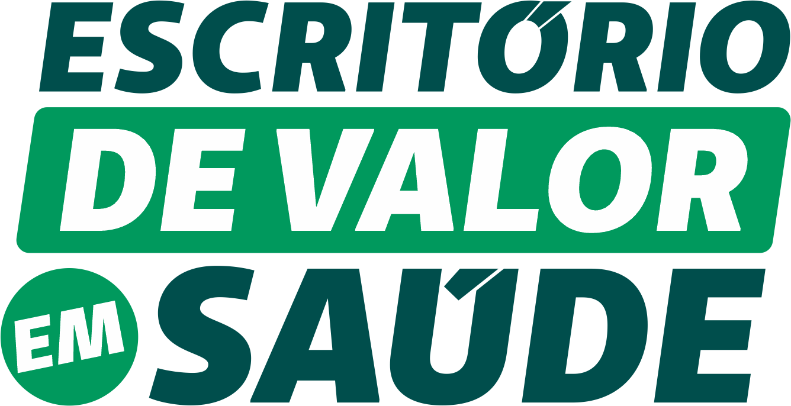

Variabilidade Assistencial - Especialidades
Exames e Procedimentos por Especialidade | Superintendencia Executiva

Exames e Procedimentos por Especialidade | Superintendencia Executiva
Consolidacao dos indicadores-chave das tres especialidades analisadas. Fonte: planilhas originais Unimed GV, totais calculados por soma direta de Pagamento/Despesa.
78% do custo sao exames de imagem. Os 5 primeiros procedimentos (todos ultrassonografias) concentram 50,3% do custo total. Cinco clinicas de imagem absorvem 86,6% dos R$ 10,2M. A especialidade funciona mais como canal de encaminhamento do que consumidora direta.
Consultas representam 58% do custo. Apenas 4 exames concentram 80% do custo complementar. Dois centros executam 55,6% de todos os exames (Nucleo Medico Especializado + Hospital de Olhos GV).
Videoendoscopia + audiometria = 51% do custo. Otoleste detem 92% do mercado de polissonografia. Variabilidade de custo unitario chega a CV 37% (Testes Vestibulares VENG) com precos variando ate 2,5x entre prestadores.
A ginecologia direciona a maior parte dos recursos para exames de imagem, com consultas representando apenas 20% e procedimentos de consultorio 1,4%.
Todos os 5 primeiros sao ultrassonografias, concentrando 50,3% do custo total. Nenhum e especifico de ginecologia.
| # | Procedimento | Custo (R$) | % | Acum. |
|---|---|---|---|---|
| 1 | US Transvaginal | 1.149.255 | 11,2% | 11,2% |
| 2 | US Abdome Inf. Feminino | 1.118.054 | 10,9% | 22,2% |
| 3 | US Abdome Total | 988.690 | 9,7% | 31,9% |
| 4 | US Mamas | 967.531 | 9,5% | 41,3% |
| 5 | Ecodopplercardiograma | 921.216 | 9,0% | 50,3% |
| 6 | Doppler Vasos Cervicais | 733.346 | 7,2% | 57,5% |
| 7 | US Estrut. Superficiais | 721.323 | 7,1% | 64,6% |
| 8 | US Orgaos Superficiais | 579.444 | 5,7% | 70,2% |
| 9 | Doppler Orgao Isolado | 515.575 | 5,0% | 75,3% |
| 10 | US Abdome Inf. Masculino | 458.829 | 4,5% | 79,8% |
Os 5 primeiros procedimentos -- todos ultrassonografias -- concentram 50,3% do custo total. Nenhum deles e especifico de ginecologia: US transvaginal, abdominal, mamas e ecodopplercardiograma sao exames compartilhados com multiplas especialidades. Isso sugere que a especialidade funciona como canal de encaminhamento mais do que como consumidora direta.
O fluxo financeiro da ginecologia converge para um oligopolio de servicos diagnosticos. Duas clinicas sozinhas detem quase metade do mercado.
O custo da ginecologia e, na pratica, um custo de servicos diagnosticos por imagem. As 5 clinicas executantes nao sao ginecologicas -- sao servicos de ultrassonografia que absorvem R$ 8,86M do total. A negociacao de valores com essas clinicas tem impacto potencialmente maior do que qualquer intervencao sobre o comportamento dos prescritores.
Diferente da ginecologia, a oftalmologia retem a maior parte do custo no ato consultivo. Exames complementares representam 42% do total.
Excluindo consultas, apenas 4 exames concentram 80% do custo de procedimentos complementares. A Tomografia de Coerencia Optica (OCT) lidera isolada.
| # | Procedimento | Custo (R$) | % | Acum. |
|---|---|---|---|---|
| 1 | Consulta em consultorio | 4.049.655 | 58,2% | 58,2% |
| 2 | OCT monocular | 686.007 | 9,9% | 68,0% |
| 3 | Mapeamento de Retina | 487.034 | 7,0% | 75,0% |
| 4 | Microscopia Especular Cornea | 363.791 | 5,2% | 80,3% |
| 5 | Paquimetria Ultrassonica | 257.412 | 3,7% | 84,0% |
| 6 | Tonometria binocular | 169.586 | 2,4% | 86,4% |
| 7 | Anti-angiogenico (sessao) | 162.318 | 2,3% | 88,7% |
| 8 | Ceratoscopia computadorizada | 148.492 | 2,1% | 90,9% |
| 9 | Campimetria computadorizada | 127.430 | 1,8% | 92,7% |
| 10 | Capsulotomia YAG | 121.576 | 1,7% | 94,4% |
Nucleo Medico Especializado e Hospital de Olhos GV formam um duopolio de fato na execucao de exames complementares.
| # | Executante | Custo (R$) | % Exames | Qt. Exames |
|---|---|---|---|---|
| 1 | Nucleo Medico Especializado | 817.171 | 28,1% | 18.488 |
| 2 | Hospital de Olhos GV | 799.776 | 27,5% | 13.317 |
| 3 | Boechat e Medicos Assoc. | 249.710 | 8,6% | 4.634 |
| 4 | Nucleo Oftalm. Dr. Rimack | 197.493 | 6,8% | 2.835 |
| 5 | Pinho Tavares & Leao | 117.031 | 4,0% | 3.794 |
| SUBTOTAL TOP 2 | 1.616.947 | 55,6% | 31.805 |
O perfil de solicitacao varia significativamente entre oftalmologistas. Filipe Garcia Moreira destoa com forte concentracao em Microscopia Especular.
| # | Solicitante | Qt. Exames | Proc. Dominante | Custo (R$) |
|---|---|---|---|---|
| 1 | Filipe Garcia Moreira | 7.765 | 34% Microscopia | 271.609 |
| 2 | Leonidas R. L. Monge | -- | 49% OCT | 125.670 |
| 3 | Wagner C. de Oliveira | -- | 39% Map. Retina | 121.762 |
| 4 | Luana V. de Pinho | -- | 39% Map. Retina | 116.798 |
| 5 | Poliana D. P. Murta | -- | 31% OCT | 113.874 |
Com 7.765 exames solicitados e R$ 272K em custo, e o maior solicitante de exames da oftalmologia. Sua concentracao de 34% em Microscopia Especular de Cornea e atipica -- a maioria dos colegas concentra em OCT ou Mapeamento de Retina. Esse padrao pode refletir subespecializacao (cornea) ou merece investigacao de pertinencia.
Os 72 procedimentos se agrupam em 8 familias. Videoendoscopia lidera com 32%, seguida por audiometria (20%) e otoemissoes (12%).
A rede de encaminhamentos revela dois padroes: autoexecucao (o medico solicita e executa) e encaminhamento externo para clinicas especializadas.
Os maiores solicitantes operam nos dois modos. Cristiano Monte Alto executa R$ 345K em procedimentos proprios (10.241 proc) mas tambem encaminha R$ 243K para a Otoleste (apenas 417 proc de alto custo -- polissonografia). Ricardo Morais divide entre autoexecucao (R$ 200K) e encaminhamento para a Othorrinus (R$ 292K).
A polissonografia -- o procedimento com maior custo unitario da especialidade -- e executada quase exclusivamente por um unico prestador.
Concentra R$ 277K em polissonografia de um total de R$ 301K. Sao apenas 520 exames, mas com custo unitario medio de R$ 561 -- o mais alto entre todos os procedimentos da especialidade. O unico concorrente (Frota e Monteiro) detem apenas 8% com 38 exames.
Procedimentos de alto volume apresentam variabilidade significativa entre prestadores, com coeficientes de variacao de ate 37%.
Procedimentos de alto volume e padronizacao tecnica (como audiometria, com 14-16 prestadores) apresentam CV ~30%. Procedimentos especializados com poucos executantes (VENG, polissonograma CPAP) chegam a CV 37%. Isso sugere que a negociacao de tabela e mais efetiva nos procedimentos de maior volume, onde ha poder de barganha real.
Documentacao das premissas e metodos utilizados na analise de variabilidade assistencial.